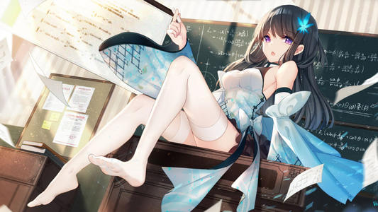

把握一个方向，随性的生活。当我们在人生的某一个路口回首往事，所有的过程，所有的结果，最终都会归结到一点，那就是：要么出门，要么回家！人不能生活得稀里糊涂，也不能生活得一板一眼。除了这两个始终如一的方向，我们便再也找不到其它任何合理的解释了。当伴随着婴儿的第一声啼哭，呱呱坠地的时候，我们从一个黑暗的世界来到了地球，并第一眼看见了光明。于是，光亮成为了我们的方向。不管别人承认不承认，反正我是承认这样的事实！
当我们开始学会说话，学会走路的时候，我们第一句会叫的总是妈妈，或者爸爸，我们总会跌跌撞撞的朝着爸妈的怀里走去。那个时候，爸妈就是我们的方向。人生，本来就是多姿多彩的！从降临尘世的那一天开始，我们混沌的眼眸和嘶哑的哭声，就已经在冥冥之中注定，人生的路没得选择，要么迎接风雨、笑对彩虹，要么回避坎坷、选择平淡，抑或踟躇而行、独自黯然。生活，本来就是有滋有味的！但有时候静静地想一想，也许，无颜无色和平淡无奇，才是最高境界的芬芳！